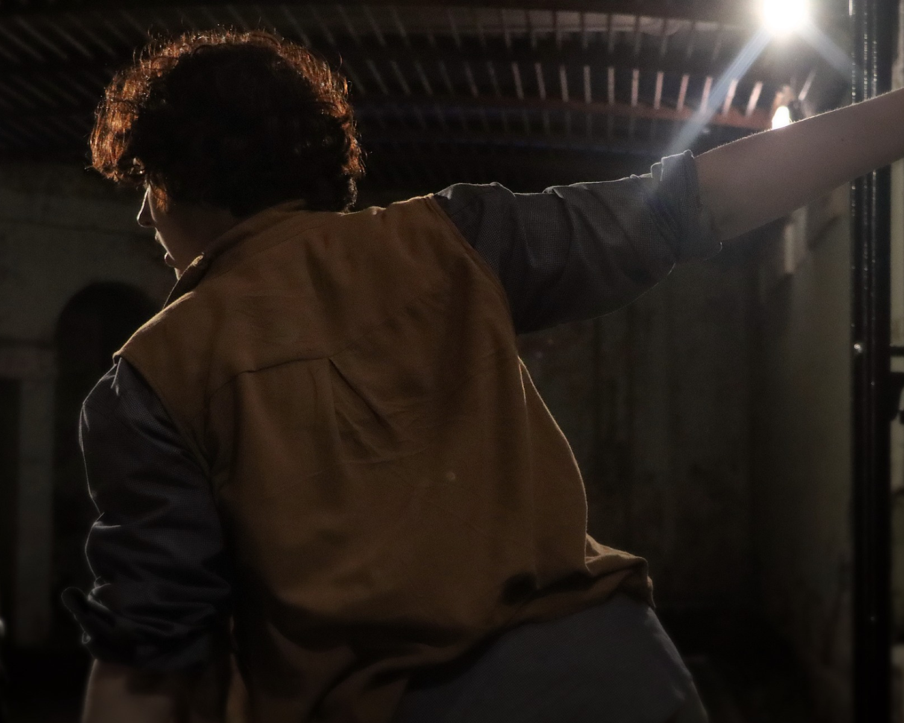
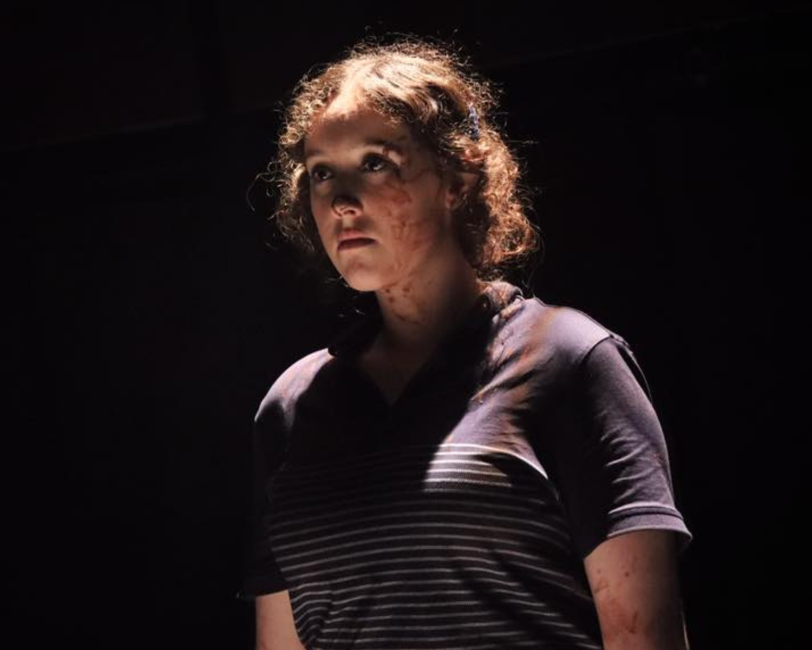
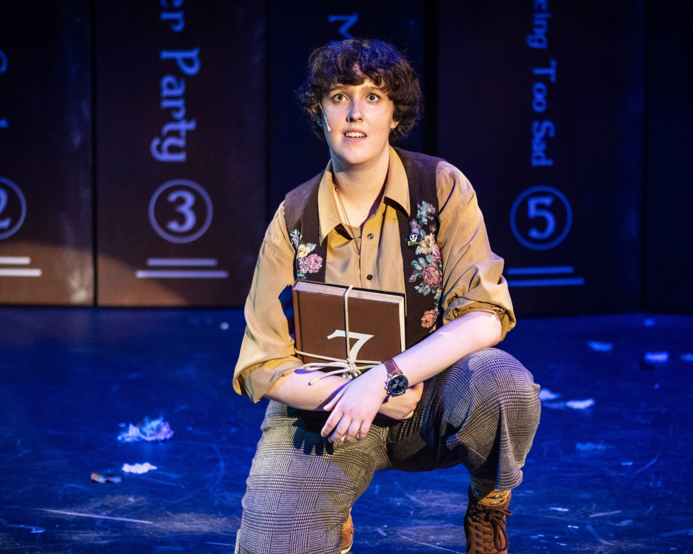
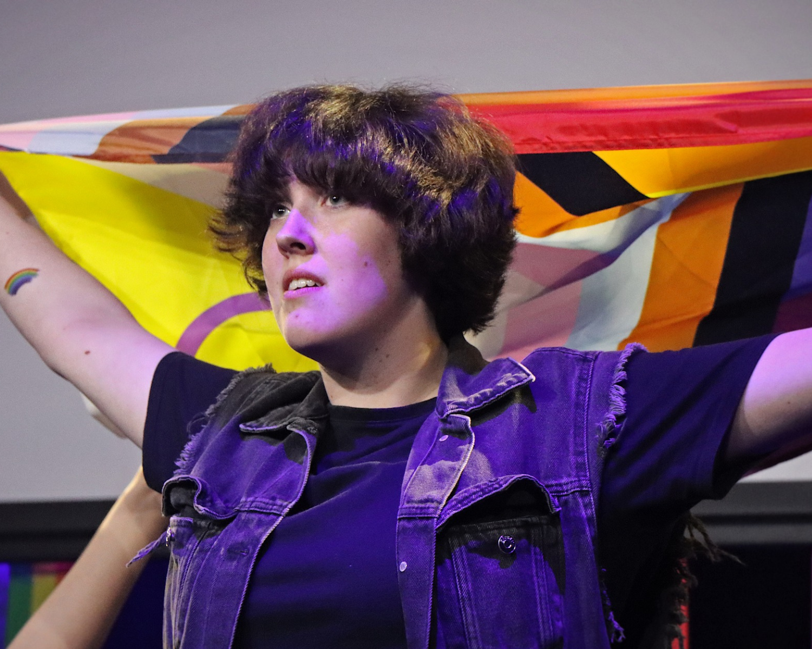
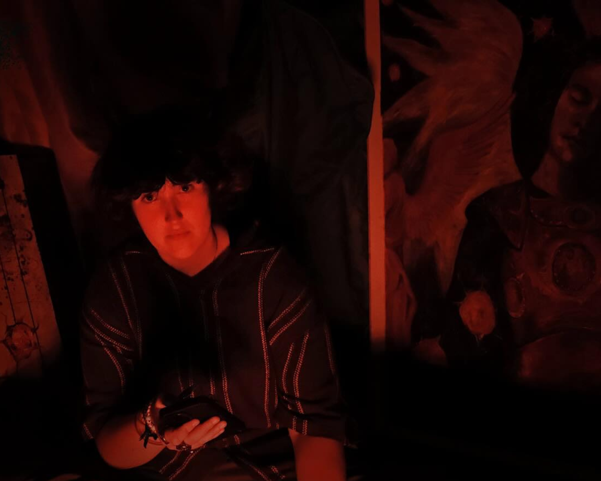

zippie tiffenright
represented by duskwren studios

represented by duskwren studios





Zippie is a 20-year-old trans-nonbinary multidisciplinary creator, playwright & director from the east coast of Australia. They studied drama at Young People’s Theatre & Hunter School of Performing Arts, and will graduate from the Academy of Interactive Technology on Gadigal Country in April 2026, with a Diploma of Film. Zippie completed a VET course Certificate III in Live Production & Technical Services, gaining their White Card and experience in sound production, lighting, camera work, and followspots. Most recently, they wrote, directed & produced their premiere full-length play 'Cosa Vedranno: What Will They See', with Bearfoot Theatre, in their hometown of Muloobinba/Newcastle on Awabakal and Worimi Land. For this production, they were nominated for the 2025 City of Newcastle Drama Award categories Makeup Design, Best Ensemble (Play) and Best New Work, and were the winner for Best Direction (Play), and Sound Design.